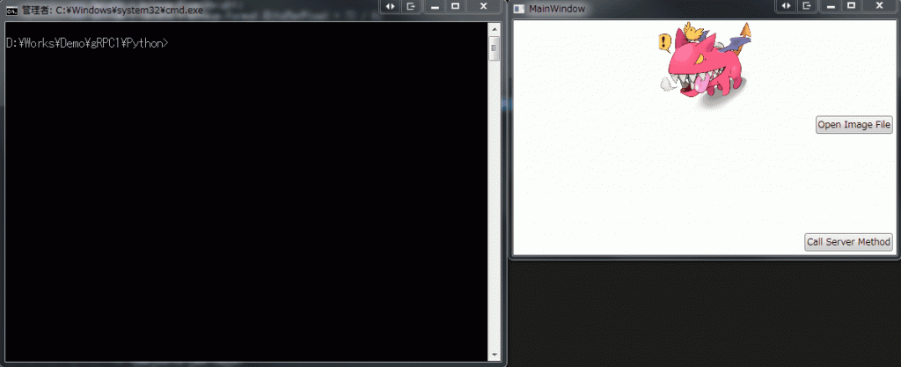

Introduction
前回は導入手順の紹介しました。 C#をサポートしているので、試してみないわけにはいきません。 Pythonもサポートしており、簡単にテストできそうです。 内容としては、C#(クライアント)-Python(サーバー)とし、クライアントから送信した画像をサーバー側で反転して返すというプログラムになります。 今回のソースは下記になります。

Preparation
C#側は前回インストールしましたので省略します。
Python
Pythonにもインストールしておきます。 Pythonインタープリターは、いつも通りMinicondaになります。 pipでインストールする場合は、pipのバージョンが8以降であることが条件です。 バージョンは下記の手順で確認。 [code lang=”batch”] C:\Program Files\Miniconda2>python -m pip –version pip 9.0.1 from C:\Program Files\Miniconda2\lib\site-packages (python 2.7) [/code] gRPCをインストールします。 [code lang=”batch”] C:\Program Files\Miniconda2>python -m pip install grpcio Collecting grpcio Downloading grpcio-1.2.0-cp27-cp27m-win_amd64.whl (1.1MB) 100% |################################| 1.1MB 846kB/s Requirement already satisfied: six>=1.5.2 in c:\program files\miniconda2\lib\site-packages (from grpcio) Collecting protobuf>=3.2.0 (from grpcio) Downloading protobuf-3.2.0-py2.py3-none-any.whl (360kB) 100% |################################| 368kB 1.8MB/s Requirement already satisfied: enum34>=1.0.4 in c:\program files\miniconda2\lib\site-packages (from grpcio) Collecting futures>=2.2.0 (from grpcio) Downloading futures-3.0.5-py2-none-any.whl Requirement already satisfied: setuptools in c:\program files\miniconda2\lib\site-packages\setuptools-20.3-py2.7.egg (from protobuf>=3.2.0->grpcio) Installing collected packages: protobuf, futures, grpcio Found existing installation: protobuf 2.6.1 Uninstalling protobuf-2.6.1: Successfully uninstalled protobuf-2.6.1 Successfully installed futures-3.0.5 grpcio-1.2.0 protobuf-3.2.0 [/code] 続いて、gRPC toolsをインストールします。 [code lang=”batch”] C:\Program Files\Miniconda2>python -m pip install grpcio-tools Collecting grpcio-tools Downloading grpcio_tools-1.2.0-cp27-cp27m-win_amd64.whl (1.5MB) 100% |################################| 1.5MB 687kB/s Requirement already satisfied: grpcio>=1.2.0 in c:\program files\miniconda2\lib\site-packages (from grpcio-tools) Requirement already satisfied: protobuf>=3.2.0 in c:\program files\miniconda2\lib\site-packages (from grpcio-tools) Requirement already satisfied: six>=1.5.2 in c:\program files\miniconda2\lib\site-packages (from grpcio>=1.2.0->grpcio-tools) Requirement already satisfied: enum34>=1.0.4 in c:\program files\miniconda2\lib\site-packages (from grpcio>=1.2.0->grpcio-tools) Requirement already satisfied: futures>=2.2.0 in c:\program files\miniconda2\lib\site-packages (from grpcio>=1.2.0->grpcio-tools) Requirement already satisfied: setuptools in c:\program files\miniconda2\lib\site-packages\setuptools-20.3-py2.7.egg (from protobuf>=3.2.0->grpcio-tools) Installing collected packages: grpcio-tools Successfully installed grpcio-tools-1.2.0[/code] gRPC toolsは proto というファイルから、サーバー、クライアント側のコードを生成するためのジェネレーターになります。
Source
gRPC tools
protoファイルを用意して、サーバー、クライアントのコードを生成します。
imageProc.proto
サンプルが github にありますが、面白くないので、手を加えます。 [code lang=”protobuf”] syntax = “proto3”;
package imageProc;
service ImageProc { rpc Enhancement (EnhancementRequest) returns (EnhancementReply) {} }
message EnhancementRequest { int32 width = 1; int32 height = 2; int32 channel = 3; bytes image = 4; }
message EnhancementReply { int32 result = 1; int32 width = 2; int32 height = 3; int32 channel = 4; bytes image = 5; } [/code] 続いて、imageProc.protoからコードを生成します。 gRPC toolsから生成しますが、PythonとC#側でそれぞれ生成する必要があります。 また、言語用にそれぞれgRPC toolsがあるので、それぞれ入手します。
for Python
PythonでのgRPC toolsは下記のように使います。 [code lang=”batch”] python -m grpc_tools.protoc -I<protoファイルの存在ディレクトリ> –python_out=<出力先のパス> –grpc_python_out=<出力先のパス> <protoファイルのパス> [/code] 今回のソース構成では、gRPC1フォルダにimageProc.protoがありますので、そこをカレントディレクトリにして下記を実行します。 [code lang=”batch”] python -m grpc_tools.protoc -I. –python_out=python –grpc_python_out=python imageProc.proto [/code] これにより、Python\imageProc_pb2.pyとPython\imageProc_pb2_grpc.py が生成されます。
for C#
C#側は少し面倒です。 まず、nugetを入手します。 これはVisual Studioから実行できるものではなく、スタンドアロンのコマンドラインツールです。 Available NuGet Distribution Versionsから、nuget.exe - recommended latest (v3.5.0)**を選択します。 ダウンロードしたnuget.exeを適切な場所に展開し、ソースフォルダのpackagesフォルダをカレントディレクトにして、次のコマンドを入力します。 [code lang=”batch”] D:\Works\Demo\gRPC1\packages>”C:\Program Files\NuGet\nuget.exe” install Grpc.Tools Feeds used: https://api.nuget.org/v3/index.json C:\Program Files (x86)\Microsoft SDKs\NuGetPackages\
GET https://api.nuget.org/v3/registration1-gz/grpc.tools/index.json OK https://api.nuget.org/v3/registration1-gz/grpc.tools/index.json 672ms
Attempting to gather dependency information for package ‘Grpc.Tools.1.2.0’ with respect to project ‘D:\Works\Demo\gRPC1\packages’, targeting ‘Any,Version=v0.0’ Gathering dependency information took 15.35 ms Attempting to resolve dependencies for package ‘Grpc.Tools.1.2.0’ with DependencyBehavior ‘Lowest’ Resolving dependency information took 0 ms Resolving actions to install package ‘Grpc.Tools.1.2.0’ Resolved actions to install package ‘Grpc.Tools.1.2.0’ Retrieving package ‘Grpc.Tools 1.2.0’ from ‘nuget.org’. Adding package ‘Grpc.Tools.1.2.0’ to folder ‘D:\Works\Demo\gRPC1\packages’ Added package ‘Grpc.Tools.1.2.0’ to folder ‘D:\Works\Demo\gRPC1\packages’ Successfully installed ‘Grpc.Tools 1.2.0’ to D:\Works\Demo\gRPC1\packages Executing nuget actions took 176.33 ms [/code] カレントディレクトリにGrpc.Tools.1.2.0が作成されます。 続いて、コードを生成します。 構文はPythonと似ています。 [code lang=”batch”] protoc.exe -I<protpファイルの存在ディレクトリ> –csharp_out <出力先のパス> –grpc_out <出力先のパス> <protoファイルのパス> –plugin=protoc-gen-grpc=<grpc_csharp_plugin.exeのパス> [/code] grpc_csharp_plugin.exeは先ほどのnuget.exeでGrpc.Toolsをインストールした際に、同時にインストールされます。 ですので、下記のようにしてimageProc.protoからコードを生成します。 [code lang=”batch”] D:\Works\Demo\gRPC1>mkdir gRPC\Contracts D:\Works\Demo\gRPC1>packages\Grpc.Tools.1.2.0\tools\windows_x86\protoc.exe -I. –csharp_out gRPC\Contracts –grpc_out gRPC\Contracts imageProc.proto –plugin=protoc-gen-grpc=packages\Grpc.Tools.1.2.0\tools\windows_x86\grpc_csharp_plugin.exe [/code] これにより、gRPC\Contracts\ImageProc.csとgRPC\Contracts\ImageProcGrpc.cs** が生成されます。
Python
コードの生成が完了したので、Python側でgRPCを利用するコードを記述していきます。
imageProc_server.py
xxx_pb2_grpc.pyというファイルにて、クライアント、サービスの基底クラスが定義されていますので、これらから派生したクラスを実装していきます。 Python側がサーバーになるので、ImageProcServicerから派生します。 [code lang=”python”] from concurrent import futures import time
import grpc
from PIL import Image import PIL.ImageOps import imageProc_pb2 import imageProc_pb2_grpc
_ONE_DAY_IN_SECONDS = 60 * 60 * 24
class ImageProc(imageProc_pb2_grpc.ImageProcServicer): def Enhancement(self, request, context): reply = imageProc_pb2.EnhancementReply() reply.width = request.width reply.height = request.height reply.channel = request.channel
imageSize = request.width, request.height # 1 (1-bit pixels, black and white, stored with one pixel per byte) # L (8-bit pixels, black and white) # P (8-bit pixels, mapped to any other mode using a colour palette) # RGB (3x8-bit pixels, true colour) # RGBA (4x8-bit pixels, true colour with transparency mask) # CMYK (4x8-bit pixels, colour separation) # YCbCr (3x8-bit pixels, colour video format) # I (32-bit signed integer pixels) # F (32-bit floating point pixels) channel = request.channel if channel == 4: print(‘channel is 4’) # PIL.ImageOps.invert does NOT support RGBA tmp = Image.frombytes(‘RGBA’, imageSize, request.image) r, g, b, a = tmp.split() rgb = Image.merge(“RGB”, (b, g, r)) inverted = PIL.ImageOps.invert(rgb) r, g, b = inverted.split() reply.image = Image.merge(“RGBA”, (r, g, b, a)).tobytes() elif channel == 3: print(‘channel is 3’) reply.image = PIL.ImageOps.invert(Image.frombytes(‘RGB’, imageSize, request.image)).tobytes() elif channel == 1: print(‘channel is 1’) reply.image = PIL.ImageOps.invert(Image.frombytes(‘1’, imageSize, request.image)).tobytes() else: print(‘channel is unknown’) reply.image = PIL.ImageOps.invert(Image.frombytes(‘L’, imageSize, request.image)).tobytes()
reply.result = 0 return reply
def serve(): server = grpc.server(futures.ThreadPoolExecutor(max_workers=10)) imageProc_pb2_grpc.add_ImageProcServicer_to_server(ImageProc(), server) server.add_insecure_port(‘[::]:50051’) server.start() try: while True: time.sleep(_ONE_DAY_IN_SECONDS) except KeyboardInterrupt: server.stop(0)
if __name__ == ‘__main__‘: serve() [/code] ImageProcは自動生成されたImageProcServicerから派生して適宜実装します。 今回は、入力されたバイナリデータを反転する処理を書いています。 main関数はserve関数を呼び出しています。 serve関数は、https://github.com/grpc/grpc/blob/master/examples/python/helloworld/greeter_server.pyを参考に記述しますので簡単です。
C#
MVVMで実装します。 画像ファイルを読み込むボタン、読み込んだ画像を表示するパネル、サーバーと通信するための送信ボタン、サーバーからの結果を表示するためのパネルを備えています。 また、実装を開始する前に、nugetでGoogle.Protobufをインストールします。
MainViewModel.cs
まずは、interfaceです。 Xaml上のButtonに対応するCommandと、Imgaeに対応するImageSourceを備えているだけです。 [code lang=”csharp”] using System.Windows.Media; using GalaSoft.MvvmLight.Command;
namespace Grpc1.ViewModels.Interfaces {
public interface IMainViewModel {
#region Properties
RelayCommand OpenFileCommand { get; }
ImageSource ResultImage { get; }
RelayCommand ServerRequestCommand { get; }
ImageSource SourceImage { get; }
#endregion
}
} [/code]
IMainViewModel.cs
IMainViewModelを継承しています。 [code lang=”csharp”] using System; using System.Windows; using System.Windows.Media; using System.Windows.Media.Imaging; using GalaSoft.MvvmLight; using GalaSoft.MvvmLight.Command; using Google.Protobuf; using Grpc1.ViewModels.Interfaces; using ImageProc; using Microsoft.WindowsAPICodePack.Dialogs;
namespace Grpc1.ViewModels {
internal sealed class MainViewModel : ViewModelBase, IMainViewModel {
#region Properties
private RelayCommand _OpenFileCommand;
public RelayCommand OpenFileCommand { get { return this._OpenFileCommand ?? (this._OpenFileCommand = new RelayCommand(() => { using (var dlg = new CommonOpenFileDialog()) { dlg.IsFolderPicker = false; dlg.AddToMostRecentlyUsedList = false; dlg.AllowNonFileSystemItems = false; dlg.EnsureFileExists = true; dlg.EnsurePathExists = true; dlg.EnsureReadOnly = false; dlg.EnsureValidNames = true; dlg.Multiselect = false; dlg.ShowPlacesList = true;
var dialogResult = dlg.ShowDialog(); if (dialogResult != CommonFileDialogResult.Ok) return;
var bitmap = new BitmapImage(); try { bitmap.BeginInit(); bitmap.UriSource = new Uri(dlg.FileName); bitmap.EndInit(); this.SourceImage = bitmap; } catch (Exception ex) { MessageBox.Show(ex.Message); } }
this._ServerRequestCommand?.RaiseCanExecuteChanged(); }, () => true)); } }
private ImageSource _ResultImage;
public ImageSource ResultImage { get { return this._ResultImage; } private set { this._ResultImage = value; this.RaisePropertyChanged(); } }
private RelayCommand _ServerRequestCommand;
public RelayCommand ServerRequestCommand { get { return this._ServerRequestCommand ?? (this._ServerRequestCommand = new RelayCommand(async () => { var bitmap = this._SourceImage as BitmapImage; if (bitmap == null) return;
var width = bitmap.PixelWidth; var height = bitmap.PixelHeight; var stride = (width * bitmap.Format.BitsPerPixel + 7) / 8; var bitsPerPixel = bitmap.Format.BitsPerPixel; var bytesPerPixel = bitsPerPixel / 8; var originalPixels = new byte[width * height * bytesPerPixel]; bitmap.CopyPixels(originalPixels, stride, 0);
try { var channel = new Grpc.Core.Channel(“127.0.0.1:50051”, Grpc.Core.ChannelCredentials.Insecure); var client = new ImageProc.ImageProc.ImageProcClient(channel); var reply = await client.EnhancementAsync(new EnhancementRequest { Height = height, Width = width, Channel = bytesPerPixel, Image = ByteString.CopyFrom(originalPixels) }); channel.ShutdownAsync().Wait();
var resultPixels = reply.Image.ToByteArray(); if (resultPixels != null) { var bmpSource = BitmapSource.Create( width, height, bitmap.DpiX, bitmap.DpiY, bitmap.Format, null, resultPixels, stride); if (bmpSource.CanFreeze) bmpSource.Freeze();
this.ResultImage = bmpSource; } } catch {
} }, () => this._SourceImage != null)); } }
private ImageSource _SourceImage;
public ImageSource SourceImage { get { return this._SourceImage; } private set { this._SourceImage = value; this.RaisePropertyChanged(); } }
#endregion
}
} [/code] OpenFileCommandは、画像ファイルをSystem.Windows.Media.Imaging.BitmapImageに変換して、SourceImageに設定するだけです。 注目は、ServerRequestCommandの下記の部分です。 [code lang=”csharp”] var channel = new Grpc.Core.Channel(“127.0.0.1:50051”, Grpc.Core.ChannelCredentials.Insecure); var client = new ImageProc.ImageProc.ImageProcClient(channel); var reply = await client.EnhancementAsync(new EnhancementRequest { Height = height, Width = width, Channel = bytesPerPixel, Image = ByteString.CopyFrom(originalPixels) }); channel.ShutdownAsync().Wait(); [/code] ローカル(127.0.0.1)のポート50051に対して、gRPCで通信を確立し、APIを呼び出しています。 ImageProc.ImageProc.ImageProcClientは、gRPC toolsで自動生成しているものです。 通信に関係するコードはすべて自動で生成されるので、クライアント側は、ちょっとした呼び出しのコードを記述するだけで、簡単にサーバー側のAPIを呼び出せるわけです。
Test
サーバー側とクライアント側をテストしてみます。 サーバー側(imageProc_server.py)を起動し、任意の画像ファイルを読み込み、サーバー側APIを呼び出すと、反転した画像が返ってきます。

{kind=link}
Conclusion
通信周りはすべて自動生成に任せ、ビジネスロジックの実装に注力できるのは、本当に楽です。 今時、ソケットだのコールバックだの考えるのは本当に面倒です。